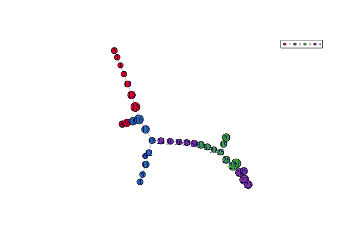

An example workflow of package tdapseudotime
You can install the development version of tdapseudotime from GitHub with remotes:
# install.packages('remotes') # uncomment to install devtools remotes::install_github('trang1618/tdapseudotime')
library(tdapseudotime) library(igraph) library(mice) library(dplyr) library(tidyr) library(ggplot2) set.seed(1234)
Preprocess
Parameters:
my_file <- 'MyDataSim.csv' # TDA hyperparameter grid intervals_seq <- seq(5, 10, 1) overlaps_seq <- seq(50, 60, 10) clust_bins <- c(6, 8, 10) ii <- 2 p <- 2 b <- 2 num_intervals <- c(intervals_seq[ii], intervals_seq[ii]) percent_overlap <- overlaps_seq[p] num_bins_when_clustering <- clust_bins[b]
Color palette for enrichment: blue > green > yellow > orange > red
# RColorBrewer::brewer.pal(length(unique(CommunityCluster$membership)), "Set1") my_colors <- c("#00A3DD", "#60C659", "#FFBC21", "#FF7F1E", "#EF2B2D")
Read in data file
Create a time line for each subject (being time zero the first observation). Extract lab values to be used for TDA distance matrix.
Check format: - first col > row id “id” (can be any value, i.e. unique row number) - second col > pts id “covid_id” - third col > date “day”
Need to check whether rowid is important
FupData <- read.csv(my_file, header = TRUE, colClasses = "character") non_lab_value_names <- c('id', 'covid_id', 'day') lab_value_names <- setdiff(names(FupData), non_lab_value_names) processed_data <- FupData %>% mutate(day = as.Date(day, format = '%Y-%m-%d')) %>% group_by(covid_id) %>% mutate(first_date = min(day)) %>% ungroup() %>% mutate( id = as.integer(id), time = as.numeric(day - first_date, units = 'days')) %>% arrange(covid_id, time) %>% mutate_at(dplyr::all_of(lab_value_names), as.numeric)
Preparing for running TDA Mapper
Compute cosine similarity and principal and secondary SVD:
cosine_sim <- cosine_sim_func(lab_values_mat) trunc_svds <- RSpectra::svds(cosine_sim, k = 2, nu = 2, nv = 2) svd1 <- - trunc_svds$u[, 1] svd2 <- - trunc_svds$u[, 2]
Uncomment to check cosine similarity values. (Optional)
# hist(apply(cosine_sim, 1, mean)) # hist(apply(cosine_sim, 1, min))
Enrich topology by any variable. Use ‘time’ for now.
f_time <- processed_data %>% select(ID = id, val = time) # or val = CRP, etc. # hist(as.numeric(f_time$val))
Run function TDA Mapper
f_sim_map <- TDAmapper::mapper2D( distance_matrix = cosine_sim, filter_values = list(svd1 , svd2), num_intervals = c(intervals_seq[ii], intervals_seq[ii]), percent_overlap = overlaps_seq[p], num_bins_when_clustering = clust_bins[b] ) f_graph <- make_graph(f_sim_map, f_time, 'clust_color', my_colors)

Create a minimum spanning tree (MST).
minspantreeweights <- igraph::mst(f_graph, weights = f_graph$clusters$edge.betweenness) plot(minspantreeweights) legend( "topright", legend = f_graph$pal$cluster, col = f_graph$pal$color, fill = f_graph$pal$color, horiz = TRUE, cex = 0.4 )

THIS STEP NEED MANUAL REVIEW
Check the MST plot and TIME boxplots.
Compute trajectories and assign observations to nodes in network.
out_trajectories <- find_trajectories( minspantreeweights, processed_data, f_sim_map, f_graph)
## trajElmnts clusterTraj
## 1 3 2 1 7 13 14 15 16 17 18 1>2
## 2 4 5 11 12 18 2
## 3 6 12 18 2
## 4 8 9 10 16 17 18 1>2
## 5 20 19 25 31 32 33 34 35 36 30 24 18 3>4>2
## 6 21 27 26 25 31 32 33 34 35 36 30 24 18 3>4>2
## 7 23 22 28 27 26 25 31 32 33 34 35 36 30 24 18 4>3>4>2
## 8 29 28 27 26 25 31 32 33 34 35 36 30 24 18 4>3>4>2similarity_df <- out_trajectories[[1]] id_node_cluster <- out_trajectories[[2]]
most_similar_traj <- similarity_df %>% group_by(covid_id) %>% slice(which.max(JW)) %>% # use Jaccard similarity for now mutate(trajNumbManual = case_when( trajNumb %in% c(1, 4) ~ "R>B", trajNumb %in% c(2, 3) ~ "B", trajNumb %in% c(5, 6 ) ~ "G>P>B", trajNumb %in% c(7, 8 ) ~ "P>G>P>B", TRUE ~ "" )) head(most_similar_traj)
## # A tibble: 6 x 12
## # Groups: covid_id [6]
## covid_id trajPaz trajPazclusters trajNumb trajElmnts trajLenght SJ SI
## <chr> <chr> <chr> <int> <chr> <int> <dbl> <dbl>
## 1 1 26 27 … 3 4 7 23 22 28 … 15 0.4 1
## 2 10 20 21 … 3 4 1 2 7 23 22 28 … 15 0.381 0.242
## 3 100 23 24 … 4 1 3 8 29 28 27 … 14 0.524 0.611
## 4 101 13 14 … 1 3 2 4 7 23 22 28 … 15 0.424 0.117
## 5 102 9 10 1… 1 2 3 4 7 23 22 28 … 15 0.267 0.229
## 6 103 20 21 … 3 4 1 2 7 23 22 28 … 15 0.519 0.275
## # … with 4 more variables: SL <dbl>, JW <dbl>, clusterTraj <chr>,
## # trajNumbManual <chr>Visualizations
plot_dat <- processed_data %>% left_join(id_node_cluster %>% distinct(covid_id, id, cluster), by = c('id', 'covid_id')) plot_dat %>% ggplot(aes(x = cluster, y = time, fill = cluster)) + geom_boxplot(alpha = 0.8) + scale_fill_manual(values = f_graph$pal$color) + scale_color_manual(values = f_graph$pal$color) + theme(legend.position = "none", plot.title = element_text(size = 8, hjust = 0.5))

plot_dat %>% select(cluster, all_of(lab_value_names)) %>% pivot_longer(- cluster, names_to = 'Lab', values_to = 'lab_value') %>% ggplot(aes(x = cluster, y = lab_value, fill = cluster)) + geom_boxplot(alpha = 0.8) + labs(x = NULL, y = NULL) + scale_fill_manual(values = f_graph$pal$color) + scale_color_manual(values = f_graph$pal$color) + theme(legend.position = "none") + facet_wrap(~ Lab, scales = 'free_y')

processed_data_traj <- processed_data %>% left_join(most_similar_traj, by = c("covid_id")) %>% mutate(trajNumbManual = as.factor(trajNumbManual), time) %>% select(time, trajNumbManual, lab_value_names) %>% distinct()
## Note: Using an external vector in selections is ambiguous.
## ℹ Use `all_of(lab_value_names)` instead of `lab_value_names` to silence this message.
## ℹ See <https://tidyselect.r-lib.org/reference/faq-external-vector.html>.
## This message is displayed once per session.processed_data_traj %>% pivot_longer(- c(time, trajNumbManual), names_to = 'Lab', values_to = 'lab_value') %>% ggplot(aes(time, lab_value, colour = trajNumbManual, group = trajNumbManual, fill = trajNumbManual)) + geom_smooth(method = "loess") + theme(legend.position = "none") + facet_wrap(~ Lab, scales = 'free_y')
Please open an issue for questions related to tdapseudotime usage, bug reports or general inquiries.
Thank you very much for your support!